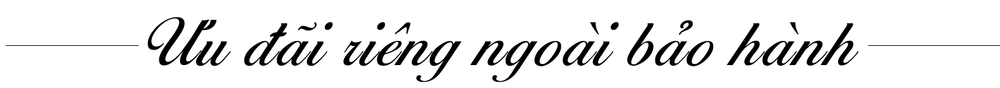

CHÍNH SÁCH BẢO HÀNH
- Bảo hành chỉ có giá trị khi đồng hồ có THẺ hoặc SỔ BẢO HÀNH chính thức đi kèm, THẺ hoặc SỔ BẢO HÀNH được ghi đầy đủ và chính xác các thông tin như: mã số đồng hồ, mã đáy của đồng hồ (nếu có), nơi bán, ngày mua hàng. THẺ hoặc SỔ BẢO HÀNH phải được đóng dấu của Đại lý ủy quyền chính thức hoặc Cửa hàng bán ra và còn trong thời hạn bảo hành theo qui định của từng hãng đồng hồ.
- Thời gian bảo hành được tính từ ngày mua được ghi trên THẺ hoặc SỔ BẢO HÀNH và không được gia hạn sau khi hết thời hạn bảo hành theo qui định của mỗi hãng đồng hồ, theo tiêu chuẩn chung thời gian bảo hành của đồng hồ thường là 24 tháng (02 năm), ngoại trừ có các cam kết đặc biệt khác.
- Chỉ bảo hành miễn phí cho các hư hỏng về máy và các linh kiện bên trong của đồng hồ được xác định là do lỗi của nhà sản xuất.
- Chỉ bảo hành thay thế mới cho những linh kiện bên trong của đồng hồ, không thay thế hoặc đổi bằng một chiếc Đồng hồ khác.
- Không bảo hành về tuổi thọ Pin của đồng hồ dòng Thể thao có chức năng đo thời gian (Chronograph) và đồng hồ có đèn soi mặt số (Loomi), đồng hồ sử dụng Pin năng lượng từ ánh sáng (Eco-Drive) sẽ áp dụng theo các chính sách bảo hành kèm theo.
- Không bảo hành Dây da "Quai đeo da" của đồng hồ bao gồm tất cả các loại chất liệu da.
- Không bảo hành cho những hao mòn thông thường theo thời gian và lão hóa do quá trình sử dụng đối với vỏ máy, dây đeo của đồng hồ bao gồm dây kim loại và dây da (Ví dụ: vỏ máy móp méo, vết hằn, trầy xước, sờn, phai màu, bong tróc lớp mạ, nứt vỡ mặt kính, khóa, dây...) trừ trường hợp lỗi kỹ thuật do nhà sản xuất thông báo.
- Không bảo hành cho những hậu quả gián tiếp của việc sử dụng không đúng cách của người sử dụng như: đeo đồng hồ trong khi xông hơi, tắm nước nóng, để đồng hồ tiếp xúc với các loại hóa chất, axít, chất tẩy rửa có độ ăn mòn cao…
- Không bảo hành cho những đồng hồ đã bị sửa chữa tại những nơi không phải là trung tâm bảo hành được các hãng đồng hồ ủy quyền chính thức hoặc Khách hàng tự ý sửa chữa.
- Trong trường hợp mất THẺ hoặc SỔ BẢO HÀNH vui lòng liên hệ ngay với chúng tôi để được hỗ trợ. Chúng tôi chỉ hỗ trợ những THẺ hoặc SỔ BẢO HÀNH vẫn còn giá trị trong thời hạn bảo hành theo qui định nhưng bị mất, không áp dụng với THẺ hoặc SỔ BẢO HÀNH đã hết thời hạn bảo hành.
Đồng hồ khi báo gần hết Pin hoặc vừa hết Pin nên được thay pin mới ngay lập tức để giảm thiểu rủi ro của việc rò rỉ gây nguy hại đối với bộ máy đồng hồ. Chúng tôi khuyến cáo khách hàng nên liên hệ với Trung Tâm Bảo Hành của ĐỒNG HỒ TỐT để thay Pin với kỹ thuật và dụng cụ chuyên nghiệp cùng các dịch vụ kiểm tra cần thiết khi mở máy. Pin cũ nên được thu hồi tập trung xử lý riêng hoặc tái chế để bảo vệ môi trường.
Các nhà sản xuất đồng hồ cũng có các khuyến cáo như sau: Không nên để đồng hồ gần nơi có từ trường mạnh; Tránh những nơi có nhiệt độ cao và thay đổi đột ngột; Luôn rửa lại đồng hồ bằng nước sạch sau khi tắm biển; Tránh tiếp xúc chất tẩy rửa, hóa chất, nước hoa, xịt tóc…; Dây da nên tránh bị ngấm nước và phơi nắng lâu; Đồng hồ phủ lớp mạ PVD không nên đánh bóng, chùi rửa mà chỉ lau bằng khăn lau chuyên dụng. Đối với đồng hồ sử dụng bộ máy tự động (Automatic), đồng hồ sử dụng Pin (Quartz) hoặc đồng hồ lên dây cót (Handwinding Movement), thì việc chỉnh giờ, chỉnh lịch hay lên dây cót nên tránh thực hiện trong khoảng thời gian từ 21h00 - 03h00 hàng ngày. Bởi nếu thực hiện các thao tác trên trong khoảng thời gian này sẽ gây hư hại ngoài ý muốn cho hệ thống bánh xe của đồng hồ; Thường xuyên lên dây phụ cho đồng hồ tự động để máy chạy chính xác;

Theo chính sách bảo hành của các hãng đồng hồ, đồng hồ Quartz "đồng hồ sử dụng Pin" các loại đều không được bảo hành về thời gian sử dụng của Pin. Tuy nhiên tất cả đồng hồ Quartz "đồng hồ sử dụng Pin" được mua trực tiếp tại hệ thống các cửa hàng thuộc ĐỒNG HỒ TỐT, đồng hồ mua Online qua Website www.donghotot.com.vn đều được thay Pin miễn phí và không hạn chế số lần. Khi sử dụng dịch vụ này, Quý khách vui lòng mang kèm theo Thẻ bảo hành hoặc hóa đơn mua hàng để chúng tôi xác nhận.